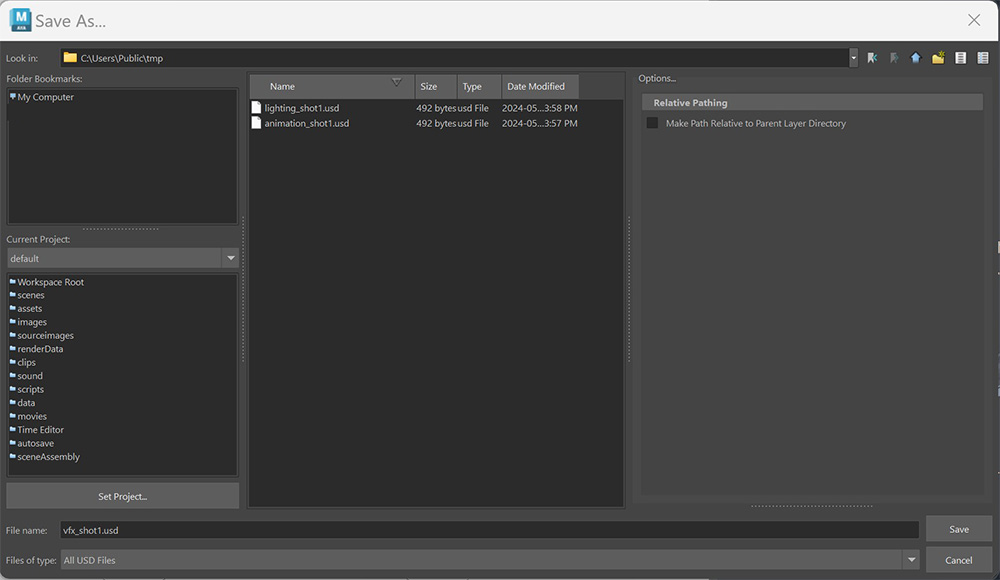
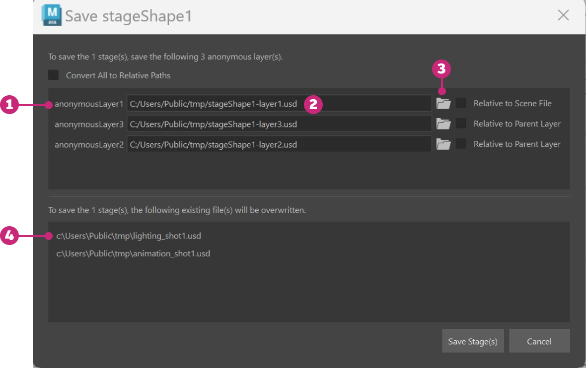

When a layer has unsaved edits, an asterisk appears next to the layer name in the USD Layer Editor. You can save an individual layer, or you can bulk save all of the unsaved edits on a stage.
Setting a pin in the USD Layer Editor will trigger a scene save. See Work with Layers to learn more about pinning stages.
Right-click a layer with unsaved edits > Save Edits
Layer edits are saved to disk and the asterisk no longer appears next to the layer name.
Saving an anonymous layer to disk creates a USD file as part of the layer stack. An asterisk appears next to a layer name when unsaved edits exist. To save a parent layer, you need to save the edits to all its sublayers first.
To save an anonymous layer, right-click on the layer and select Save As, or double-click on the layer.
In the file browser that appears, set the following:

File name: Enter a name manually or select the name of an existing file
Files of type: Select .usd, .usda, or .usdc file format from the Files of Type drop-down menu
| Type | Format |
|---|---|
| .usd | generalized format in which you can specify between Binary (default) or ASCII |
| .usda | optimized for human readability, ASCII only |
| .usdc | optimized for machine readability, Binary only |
Once you name any applicable anonymous layer (and the Maya scene file has been saved to disk), under File Options, you can select Make Path Relative to Parent Layer Directory. With this toggle, you can load and save USD sublayer files as relative to your parent file directory and also save an anonymous root layer file as relative to your Maya scene file. To learn more about saving USD files relatively, see Make Path Relative.
Click Save.
The name of the anonymous layer is updated and the asterisk disappears, indicating that there are no longer unsaved edits on the layer.
In the USD Layer Editor, click .
Saving a stage lets you bulk save any unsaved edits in your stage. In the USD Layer Editor, the number displayed beside the save stage icon indicates the number of layers with unsaved edits:
If you have unsaved edits on multiple layers in your Layer Stack, you need to save those layers to disk before you can save the stage. When you have unsaved edits to multiple layers, you will recieve the following dialog (or a portion of it - depending on if your layers are existing or new):

| # | Element | Description |
|---|---|---|
| 1 | Anonymous Layer(s) Save | This section of the Save Stage Dialog appears when you have edits to anonymous or newly created layers. |
| 2 | Anonymous Layer File Name | Anonymous layers have not been saved to disk so Maya will autopopulate a file name for the save operation in the syntax of stageName-layer#. |
| 3 | Anonymous Layer Save Path | Click the folder icon to choose the location for saving your anonymous layer to disk. |
| 4 | Existing Layer(s) Save | This section of the Save Stage Dialog appears when you have unsaved edits to existing (ie. file-backed) layers. This section exists as a confirmation of the layers being overwritten with edits. |
Click to set the save location on disk. The toggle next to this icon allows you to save USD sublayers as relative to your parent file directory or save an anonymous root layer as relative to your Maya scene file. To learn more about saving USD files relatively, see Make Path Relative.
Click Save Stage.
To save your Maya scene file with unsaved edits on USD layers, see Save USD data